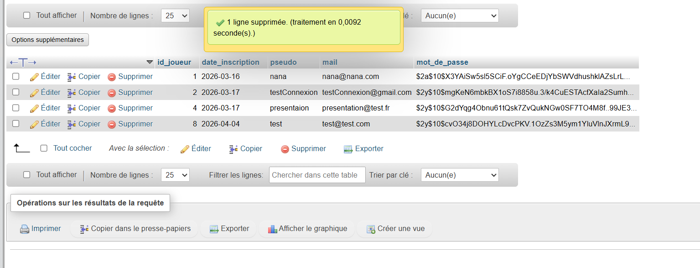
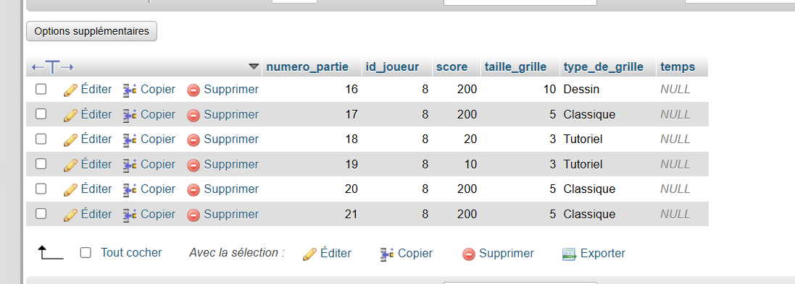
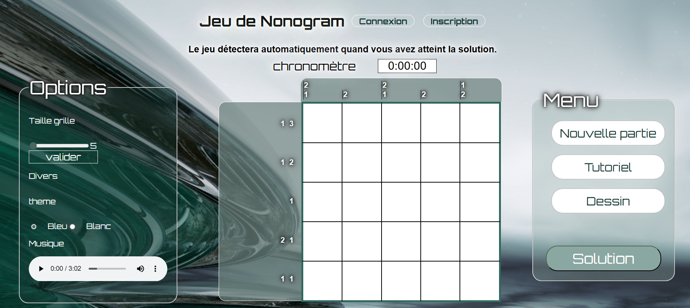

Portefolio BTS SIO
Jeu de Nonogram
Gérer le patrimoine informatique
Gérer des sauvegardes
- Formulaire inscription/Connexion
- Création sessions utilisateur
- Enregistrement scores


Développer la présence en ligne de l'organisation
Participer à l'évolution d'un site Web exploitant les données de l'organisation
- Utilisation des données (joueur et score)
- Création du site Web
Travailler en mode projet
Analyser les objectifs et les modalités d'organisation d'un projet
Planifier les activités
- Consignes à appliquer
- Hiérarchiser les demandes dans un temps imparti
- Répartir les tâches avec son groupe

Organiser son développement professionnel
Mettre en place son environnement d'apprentissage personnel
Documentation en ligne pour CSS, JavaScript et bonne utilisation PHP
MDN
w3schools